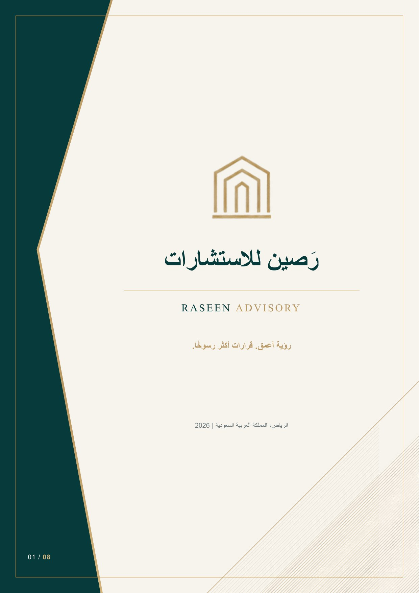
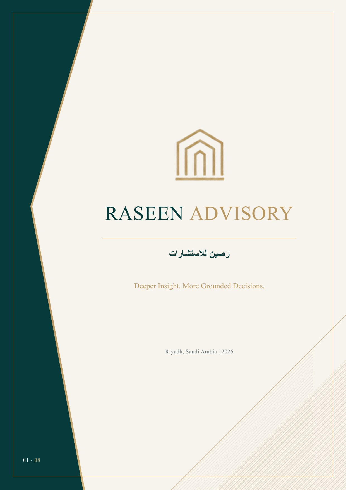

RASEEN ADVISORY
عن رَصين
منهج استشاري يربط فهم السوق بتقييم الفرص والمخاطر.
ما الذي ندرسه؟
- السوق والطلبتحليل محركات السوق واحتياجات العملاء واتجاهات الطلب.
- المنافسة والبيئة التنظيميةفهم البدائل ومتطلبات الدخول التي ينبغي التحقق منها.
- الفرضيات والمخاطراختبار الافتراضات ومقارنة الخيارات والسيناريوهات.
مخرجات محتملة
قد تشمل المخرجات تقريرًا تحليليًا ومقارنة للخيارات وتوصيات للخطوات التالية بحسب النطاق المتفق عليه.
الملف التعريفي المؤسسي
رَصين، عن قرب
ملف تعريفي من ثماني صفحات يقدّم رَصين عن قرب: من نحن، وخدماتنا، ومنهجية عملنا، والقطاعات التي نعمل فيها، ونماذج توضيحية من الدراسات، وما تقدّمه مخرجاتنا لصاحب القرار.

